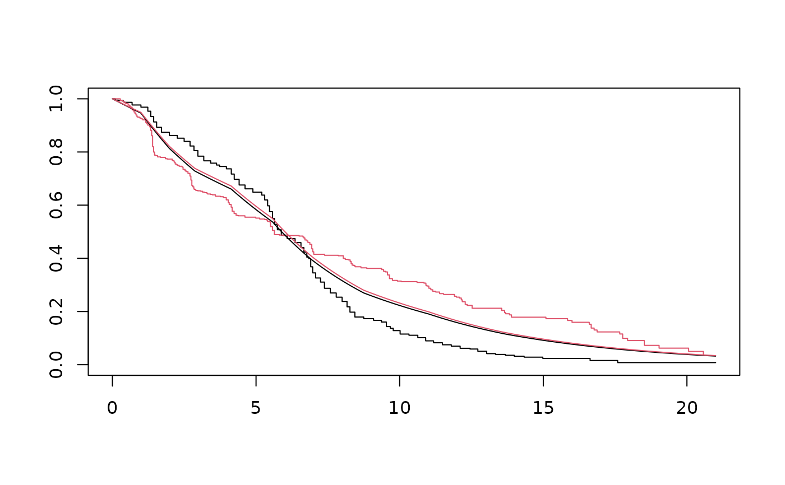

Computes the predicted survivor function for a pope model.
Usage
# S3 method for pope
survfit(formula, newdata, ...)Arguments
- formula
an object of the class pope
- newdata
a data frame containing the set of explanatory variables.
- ...
further arguments passed to or from other methods.
Examples
# \donttest{
# ML approach:
library(YPPE)
mle <- pope(Surv(time, status)~arm, data=ipass, n_int=10, approach="mle", init = 0)
summary(mle)
#> Call:
#> pope(formula = Surv(time, status) ~ arm, data = ipass, n_int = 10,
#> approach = "mle", init = 0)
#>
#> Proportional odds coefficients:
#> Estimate StdErr z.value p.value
#> arm -0.051682 0.103114 -0.5012 0.6162
#>
#> ---
#> loglik = -2821.851 AIC = 5665.702
ekm <- survival::survfit(Surv(time, status)~arm, data=ipass)
newdata <- data.frame(arm=0:1)
St <- survfit(mle, newdata)
plot(ekm, col=1:2)
with(St, lines(time, surv[[1]]))
with(St, lines(time, surv[[2]], col=2))

# Bayesian approach:
bayes <- pope(Surv(time, status)~arm, data=ipass, n_int=10, approach="bayes")
#>
#> SAMPLING FOR MODEL 'yppe' NOW (CHAIN 1).
#> Chain 1:
#> Chain 1: Gradient evaluation took 0.000401 seconds
#> Chain 1: 1000 transitions using 10 leapfrog steps per transition would take 4.01 seconds.
#> Chain 1: Adjust your expectations accordingly!
#> Chain 1:
#> Chain 1:
#> Chain 1: Iteration: 1 / 2000 [ 0%] (Warmup)
#> Chain 1: Iteration: 200 / 2000 [ 10%] (Warmup)
#> Chain 1: Iteration: 400 / 2000 [ 20%] (Warmup)
#> Chain 1: Iteration: 600 / 2000 [ 30%] (Warmup)
#> Chain 1: Iteration: 800 / 2000 [ 40%] (Warmup)
#> Chain 1: Iteration: 1000 / 2000 [ 50%] (Warmup)
#> Chain 1: Iteration: 1001 / 2000 [ 50%] (Sampling)
#> Chain 1: Iteration: 1200 / 2000 [ 60%] (Sampling)
#> Chain 1: Iteration: 1400 / 2000 [ 70%] (Sampling)
#> Chain 1: Iteration: 1600 / 2000 [ 80%] (Sampling)
#> Chain 1: Iteration: 1800 / 2000 [ 90%] (Sampling)
#> Chain 1: Iteration: 2000 / 2000 [100%] (Sampling)
#> Chain 1:
#> Chain 1: Elapsed Time: 3.24103 seconds (Warm-up)
#> Chain 1: 2.98006 seconds (Sampling)
#> Chain 1: 6.22109 seconds (Total)
#> Chain 1:
#>
#> SAMPLING FOR MODEL 'yppe' NOW (CHAIN 2).
#> Chain 2:
#> Chain 2: Gradient evaluation took 0.000399 seconds
#> Chain 2: 1000 transitions using 10 leapfrog steps per transition would take 3.99 seconds.
#> Chain 2: Adjust your expectations accordingly!
#> Chain 2:
#> Chain 2:
#> Chain 2: Iteration: 1 / 2000 [ 0%] (Warmup)
#> Chain 2: Iteration: 200 / 2000 [ 10%] (Warmup)
#> Chain 2: Iteration: 400 / 2000 [ 20%] (Warmup)
#> Chain 2: Iteration: 600 / 2000 [ 30%] (Warmup)
#> Chain 2: Iteration: 800 / 2000 [ 40%] (Warmup)
#> Chain 2: Iteration: 1000 / 2000 [ 50%] (Warmup)
#> Chain 2: Iteration: 1001 / 2000 [ 50%] (Sampling)
#> Chain 2: Iteration: 1200 / 2000 [ 60%] (Sampling)
#> Chain 2: Iteration: 1400 / 2000 [ 70%] (Sampling)
#> Chain 2: Iteration: 1600 / 2000 [ 80%] (Sampling)
#> Chain 2: Iteration: 1800 / 2000 [ 90%] (Sampling)
#> Chain 2: Iteration: 2000 / 2000 [100%] (Sampling)
#> Chain 2:
#> Chain 2: Elapsed Time: 3.10395 seconds (Warm-up)
#> Chain 2: 2.97195 seconds (Sampling)
#> Chain 2: 6.07591 seconds (Total)
#> Chain 2:
#>
#> SAMPLING FOR MODEL 'yppe' NOW (CHAIN 3).
#> Chain 3:
#> Chain 3: Gradient evaluation took 0.000402 seconds
#> Chain 3: 1000 transitions using 10 leapfrog steps per transition would take 4.02 seconds.
#> Chain 3: Adjust your expectations accordingly!
#> Chain 3:
#> Chain 3:
#> Chain 3: Iteration: 1 / 2000 [ 0%] (Warmup)
#> Chain 3: Iteration: 200 / 2000 [ 10%] (Warmup)
#> Chain 3: Iteration: 400 / 2000 [ 20%] (Warmup)
#> Chain 3: Iteration: 600 / 2000 [ 30%] (Warmup)
#> Chain 3: Iteration: 800 / 2000 [ 40%] (Warmup)
#> Chain 3: Iteration: 1000 / 2000 [ 50%] (Warmup)
#> Chain 3: Iteration: 1001 / 2000 [ 50%] (Sampling)
#> Chain 3: Iteration: 1200 / 2000 [ 60%] (Sampling)
#> Chain 3: Iteration: 1400 / 2000 [ 70%] (Sampling)
#> Chain 3: Iteration: 1600 / 2000 [ 80%] (Sampling)
#> Chain 3: Iteration: 1800 / 2000 [ 90%] (Sampling)
#> Chain 3: Iteration: 2000 / 2000 [100%] (Sampling)
#> Chain 3:
#> Chain 3: Elapsed Time: 3.09057 seconds (Warm-up)
#> Chain 3: 2.9718 seconds (Sampling)
#> Chain 3: 6.06237 seconds (Total)
#> Chain 3:
#>
#> SAMPLING FOR MODEL 'yppe' NOW (CHAIN 4).
#> Chain 4:
#> Chain 4: Gradient evaluation took 0.000374 seconds
#> Chain 4: 1000 transitions using 10 leapfrog steps per transition would take 3.74 seconds.
#> Chain 4: Adjust your expectations accordingly!
#> Chain 4:
#> Chain 4:
#> Chain 4: Iteration: 1 / 2000 [ 0%] (Warmup)
#> Chain 4: Iteration: 200 / 2000 [ 10%] (Warmup)
#> Chain 4: Iteration: 400 / 2000 [ 20%] (Warmup)
#> Chain 4: Iteration: 600 / 2000 [ 30%] (Warmup)
#> Chain 4: Iteration: 800 / 2000 [ 40%] (Warmup)
#> Chain 4: Iteration: 1000 / 2000 [ 50%] (Warmup)
#> Chain 4: Iteration: 1001 / 2000 [ 50%] (Sampling)
#> Chain 4: Iteration: 1200 / 2000 [ 60%] (Sampling)
#> Chain 4: Iteration: 1400 / 2000 [ 70%] (Sampling)
#> Chain 4: Iteration: 1600 / 2000 [ 80%] (Sampling)
#> Chain 4: Iteration: 1800 / 2000 [ 90%] (Sampling)
#> Chain 4: Iteration: 2000 / 2000 [100%] (Sampling)
#> Chain 4:
#> Chain 4: Elapsed Time: 3.21853 seconds (Warm-up)
#> Chain 4: 2.99967 seconds (Sampling)
#> Chain 4: 6.2182 seconds (Total)
#> Chain 4:
summary(bayes)
#> Call:
#> pope(formula = Surv(time, status) ~ arm, data = ipass, n_int = 10,
#> approach = "bayes")
#>
#> Proportional hazards coefficients:
#> mean se_mean sd 2.5% 25% 50% 75% 97.5% n_eff Rhat
#> arm -0.049 0.002 0.102 -0.251 -0.117 -0.051 0.022 0.146 4088.324 1
#> ---
#> Inference for Stan model: yppe.
#> 4 chains, each with iter=2000; warmup=1000; thin=1;
#> post-warmup draws per chain=1000, total post-warmup draws=4000.
#>
ekm <- survival::survfit(Surv(time, status)~arm, data=ipass)
newdata <- data.frame(arm=0:1)
St <- survfit(bayes, newdata)
plot(ekm, col=1:2)
with(St, lines(time, surv[[1]]))
with(St, lines(time, surv[[2]], col=2))
# }